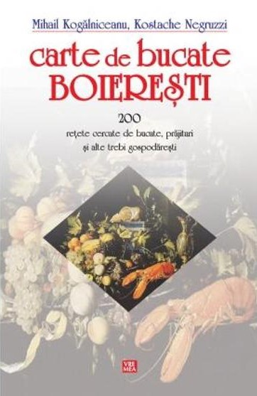

Carte de bucate
Mihail Kogalniceanu, Kostache Negruzzi
În 1841 apărea la Iaşi o „Carte de bucate boiereşti - 200 reţete cercate de bucate, prăjituri şi alte trebi gospodăreşti” în spatele cărora se ascundeau doi boieri: Mihail Kogălniceanu şi Kostache Negruzzi. Cartea de faţă este un rezultat al activităţii practice - reţetele sunt cercate, nu compilate pur şi simplu de prin alte părţi.
Compilatori inspiraţi, chiar îndemânatici, talentaţi mânuitori – şi aici – ai cuvântului artistic, Negruzzi şi Kogălniceanu au realizat ceea ce acesta din urmă a intuit sau şi-au propus avangardist: alcătuirea în limba română a primului rudiment de vocabular al domeniului artei culinare. Căci din reţetele lor – nu încercăm să stabilim câte (şi care) provenite din bucătăria tradiţională autohtonă şi câte (şi care) din frecventarea aplicată a unor lucrări specializate, cu predilecţie nemţeşti şi franţuzeşti –, se poate desprinde o listă destul de generoasă de termeni specifici fiecare cu tocmeala lui, epuizând de mai multe ori literele alfabetului, fie el chirilic sau latin.